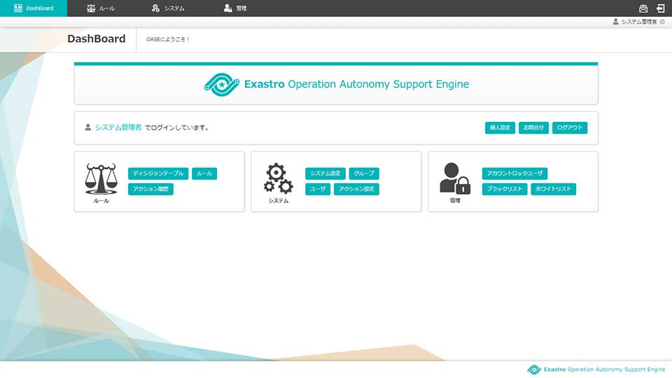
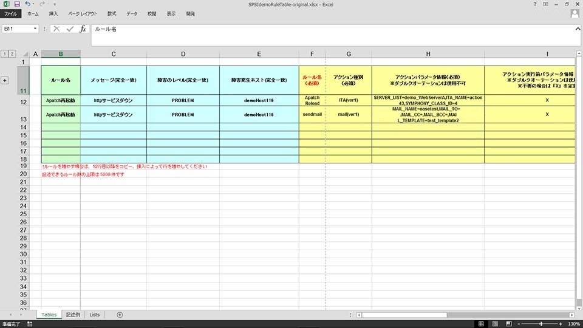
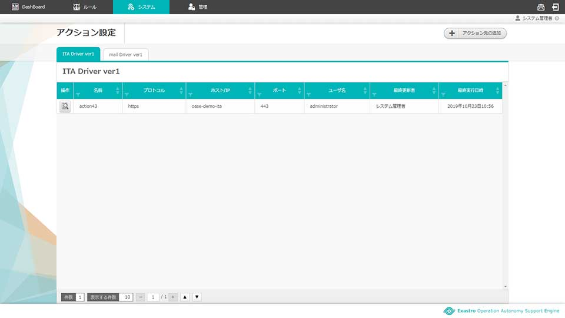

Exastro OASE solves 3 problems often seen in system operations.
-
- Breaking down problems and finding solutions heavily relies on experts.
- The system automatically chooses the correct solution based on pre-set rules..
- 
-
- Manual labor leads to operation errors..
- By linking automation software and automatically executed troubleshooting, we can eliminate human errors.
- 
-
- Effect on service is often expanded due to recovery being delayed.
- Since solutions and fixes are applied right after the problems are examined, the effects are heavily minimized.
- 